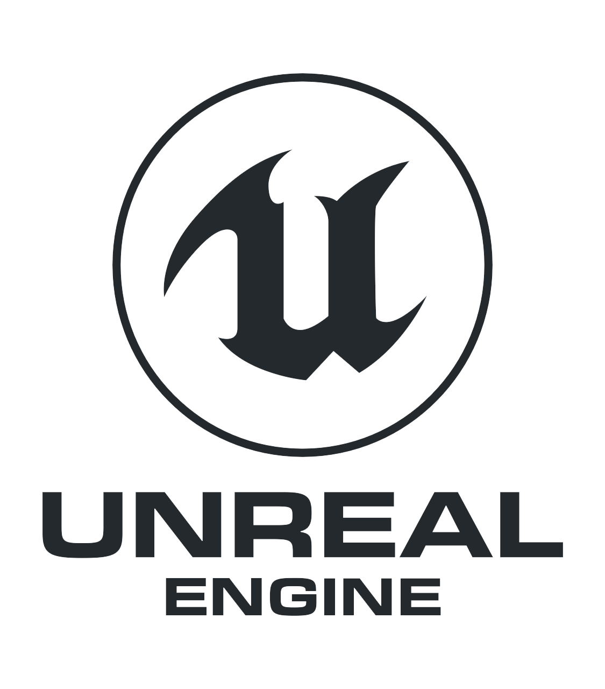
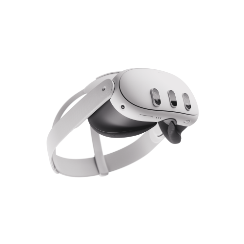

Built the first VR prototypes
Started translating ideas into Unreal scenes, experimenting with movement, interaction feel, and what makes players trust a virtual space.
I build XR products where interaction quality matters as much as performance. From hand tracking and gameplay loops to enterprise simulations and Quest optimization, I like making ambitious ideas feel natural inside the headset.

Unreal Engine 5
Meta Quest OpenXR C++ Python Blender Hand Tracking UnityCareer Timeline
A fast look at the path that shaped my work: gameplay instincts, performance constraints, enterprise rigor, and the interaction design needed to make XR feel believable.
Started translating ideas into Unreal scenes, experimenting with movement, interaction feel, and what makes players trust a virtual space.
Optimization became part of the design process. Interaction systems had to stay tactile without sacrificing framerate or device limits.
Worked on immersive systems that needed more than visual polish: procedural clarity, user trust, repeatable flows, and business reliability.
Leaning harder into hand tracking, systemic gameplay, telemetry, and reusable tooling so teams can ship faster with less friction.
Today the goal is simple: interactions that feel premium, visuals that look intentional, and production pipelines that make ambitious XR actually shippable.
Featured Work
Code
Hand-tracking wave shooter tuned for short sessions and replayable intensity.
Interaction toolkit for enterprise XR simulations with natural gesture handling.
Runtime metrics, profiling insights, and performance support for standalone VR builds.
Writing
A practical path into immersive development without losing time to setup friction.
A clearer way to think about judgment, tools, and where automation actually helps.
A deployment workflow built for fewer clicks and faster iteration loops.
Video
This section is ready for dedicated highlight videos. For now, project demos are surfaced through the latest projects panel and project pages.
Knowledge Base
Small, practical patterns for building cleaner interactions, better performance paths, and more reliable XR gameplay architecture.
Open TipsCollaboration
If you are shipping XR gameplay, enterprise simulations, or interaction-heavy prototypes, send over the brief. I typically reply within 24 hours.